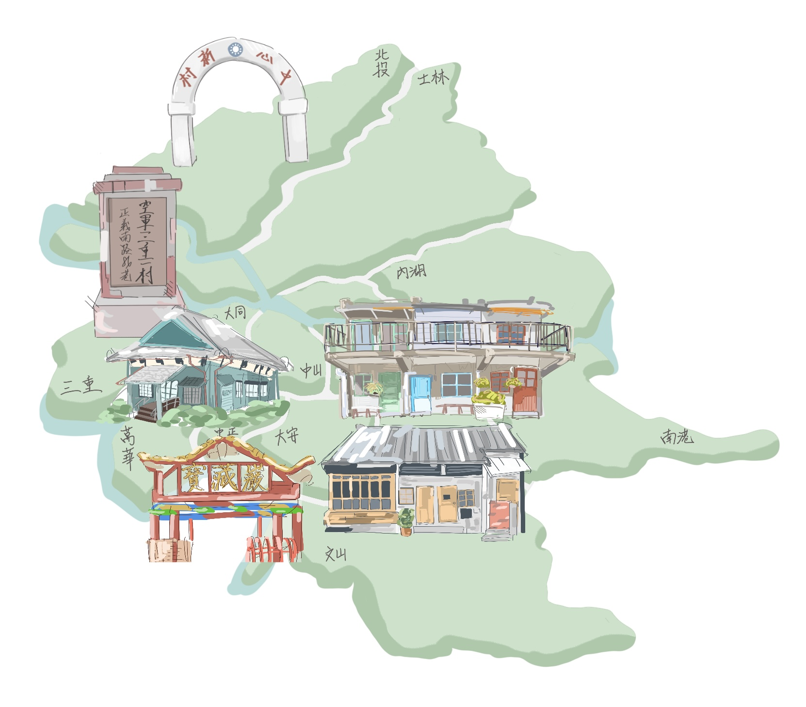

走進雙北眷村
探索歷史、文化與生活記憶
眷村簡介
1940年代末期，政府為安置戰後來台的國軍及其家屬，設立了許多宿舍供移民居住，久而久之也形成了一個小村落。
眷村多分布於台北、高雄等地，雖大多都已拆除，但仍有部分眷村留存下來作為歷史建築供民眾參觀。
漫步在古蹟中，聆聽著老建築述說這片土地曾發生過的種種往事。
在這不大卻溫馨的眷村之中，大家雖來自大江南北，但因共同落腳於同一土地，居民逐漸熟絡，往來頻繁，
彼此間也產生了深厚的情感與鄰里情誼，建構出獨特的眷村文化生活圈。
位置導覽

※ 本圖位置僅供參考，不代表實際精確位置。